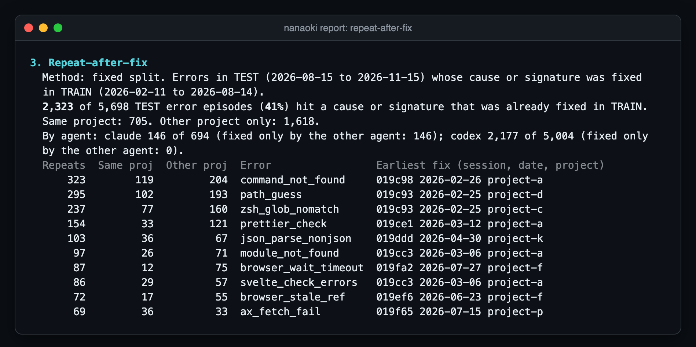
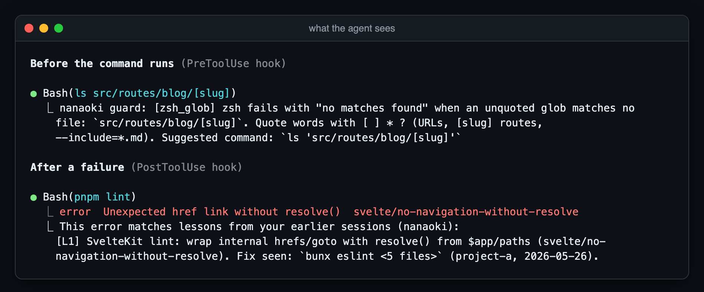
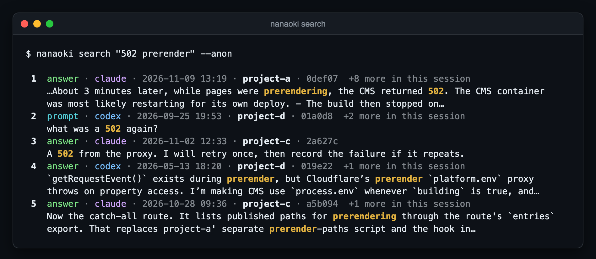
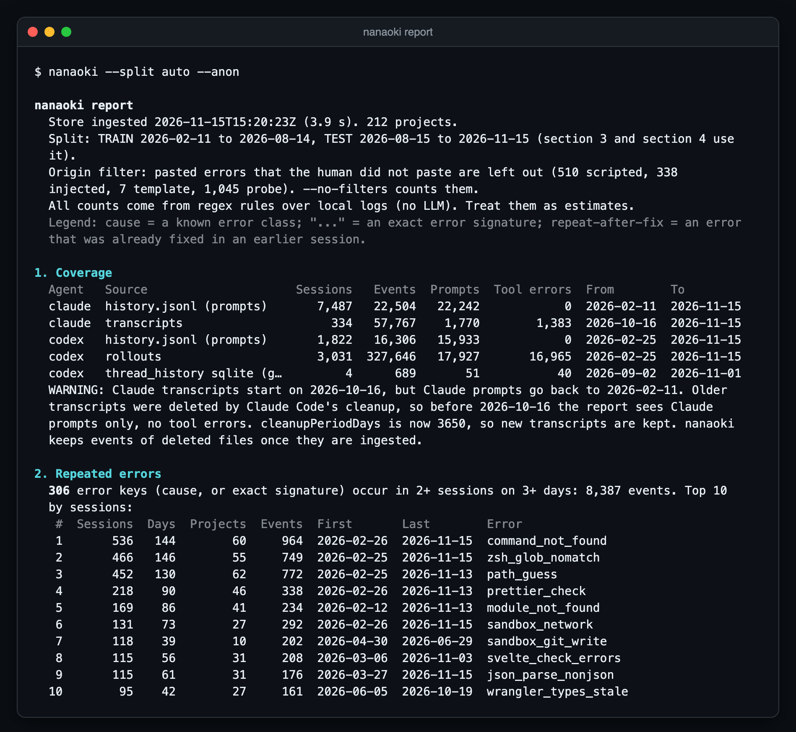

Your coding agent keeps making the same mistake. It fixed it last month, in another repo.
nanaoki reads the Claude Code and Codex history already on your machine and finds the errors your agents keep hitting. When one comes back, the agent gets the fix that worked last time.
brew tap JustinyAhin/tapbrew trust JustinyAhin/tapbrew install nanaokicurl -fsSL https://raw.githubusercontent.com/JustinyAhin/nanaoki/main/install.sh | sh# Go 1.26+go install github.com/JustinyAhin/nanaoki/cmd/nanaoki@latestSame mistake again
Every session starts from zero.
The agent hits an error, works it out and moves on. The next session hits the same error and takes the same detour. People on Reddit and X describe it better than I can.
Making the same mistakes again, and then even explaining it with, I said to myself I shouldn't do it this way
A rule can be sitting in CLAUDE.md, written correctly, and still get ignored ... CLAUDE.md was read a hundred messages ago.
Your folder layout, your naming rules, every 'no, not like that'. Gone the second the session ends.
You're relying on Claude to find the file, and then find the mistake, and then follow the rule.
Real comments from public Reddit and X posts, trimmed for length.
So I counted, on my own history.
9 months of Claude Code and Codex logs from my laptop. 3,030 Codex sessions, about 18K tool errors.
of the errors from Sep to Nov were ones my agents had already hit and fixed between Feb and Aug.
of those repeats had the fix only in a different project. The next repo started from zero.
sessions across 54 projects hit the same zsh quoting error. The agent adds quotes and moves on, every time.
sessions where I typed some version of "don't make any changes yet". I repeat myself too.
Why not just CLAUDE.md
I was sure a better CLAUDE.md would be enough.
So I tested that before I built anything else. I took 108 real cases from my history and replayed them. Two AI judges (Claude and GPT, 93% agreement) scored whether each setup would have prevented what came next.
The file does win on stable decisions like "commit only when I say so". Those belong in a file that is always loaded, so nanaoki rules suggest proposes lines for yours. It loses on the long tail of one-off errors, and on fixes that live in another repo.
Read these numbers with care. This is my own data, from one laptop, and a replay scored by models. I haven't measured live use yet. Run it on your history and see what your number is.
See real cases from the replay: ten repeats from my history, what nanaoki showed the agent, and the two it missed.
How it works
It reads your old sessions and finds the fix that worked.
One Go binary with no model in it. It is regexes and counting, over logs that are already on your disk.
- ReadIt reads the Claude Code and Codex sessions in
~/.claudeand~/.codex. - DetectIt finds the errors that keep coming back, and the later command that worked.
- LessonEach fix becomes a sentence or two: what failed and what fixed it, with the project it came from.
- GuardBefore a command that's known to fail, the agent gets a warning and the fixed command.
- SearchFull-text search over your prompts, the agent's replies and the tool output.
Your number, in one command
How many errors in the last third of your history had a cause that an earlier session already fixed, and in which project. (My 40% uses a fixed Feb-Aug / Sep-Nov split. auto picks its own thirds, so this screenshot says 41%.)




Warn before, remind after
Before a command that's known to fail, the agent gets the fixed one. After a failure, it gets the lesson from the session that fixed it, even if that was in another repo.


"Did we fix this before?"
Search your old sessions. Real answers rank above tool calls that only grep for the words. The past-sessions skill tells your agent to look here when you ask.
The full report
Coverage, repeated errors, time lost, the rules you keep typing, a monthly trend, and a suggested fix for each top item. Treat the counts as estimates. --format json gives the file and line behind each number.


Screenshots use --anon, which hides project names, session ids and home paths. Use it if you share your report.
Install
Get your own number in two minutes.
1. Get the binary
macOS or Linux. On Windows, download the zip from the releases page.
brew tap JustinyAhin/tapbrew trust JustinyAhin/tapbrew install nanaokicurl -fsSL https://raw.githubusercontent.com/JustinyAhin/nanaoki/main/install.sh | sh# Go 1.26+go install github.com/JustinyAhin/nanaoki/cmd/nanaoki@latest2. See your numbers
How many errors in the last third of your history were already fixed in the first two thirds.
nanaoki --split auto3. Stop the repeats
Install the hooks. They refresh the lessons once a day in the background.
nanaoki setup claudenanaoki setup codexFor Codex, trust the hooks in /hooks after setup.
Privacy
Your sessions stay on your machine.
Session logs have your code in them, and your clients' code. I didn't want mine sent anywhere, so nanaoki sends nothing.
- Local only. There is no account, no telemetry and no server.
- No LLM. Every count comes from regex rules you can read.
- No network. It makes no network calls. The one network step is
nanaoki setup claude, which asks theclaudeCLI to fetch the plugin from GitHub. - Read-only. It reads
~/.claudeand~/.codexand never changes them. - One folder. It writes only to
~/.local/share/nanaoki/. Delete that folder to remove everything.
Questions
Does it send my code anywhere?
No. nanaoki makes no network calls and there is no account. The index, the lessons and the report stay in ~/.local/share/nanaoki/. The one network step is nanaoki setup claude, which asks the claude CLI to fetch the plugin from GitHub.
Which agents does it work with?
Claude Code and Codex. It reads both histories, so a fix from a Codex session can show up in Claude Code. It runs on macOS, Linux and Windows.
Does it slow my agent down?
A hook call takes about 15 ms at p95 on my laptop. If a hook fails, it fails open and the agent carries on. The hooks stay quiet on probes like test -f or a grep with no match.
What does it cost?
Nothing. It's free and open source, under the MIT license.
Do I still need CLAUDE.md or AGENTS.md?
Yes, for stable decisions. In my replay the file beat the lessons on those. nanaoki rules suggest prints lines for your file from the instructions you keep typing. The suggestions can be noisy, so it only prints them. It never writes the file.
My history is short. Is it worth it?
Run the report and look. If you use Claude Code, check one setting today: it deletes transcripts after 30 days by default. Set "cleanupPeriodDays": 3650 in ~/.claude/settings.json to keep them. The report gets more useful as the history grows.